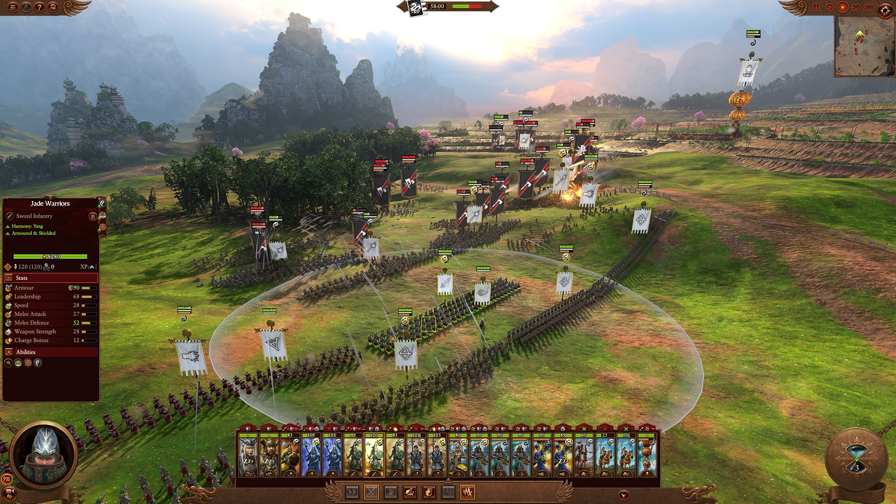

Description
The last roar of a dying god ruptures the boundary between worlds, opening a portal to the Realm of Chaos. From this maelstrom, the four Ruinous Powers Khorne, Nurgle, Tzeentch and Slaanesh emerge, spreading darkness and despair.
The stern warriors of Kislev and the vast empire of Grand Cathay stand at the threshold, as a vengeful Daemon Prince vows to destroy those who corrupted him. The coming conflict will engulf all. Will you conquer your daemons? Or command them?
With seven unique races and hundreds of units under your command, raise an army and dominate in epic real-time battles across a world of breathtaking scale and spectacle.
In the most ambitious and groundbreaking Total War title to date, dive into a captivating narrative that will take you to the mind-bending Realm of Chaos and back again. Forge your empire in a strategy sandbox that ensures no two campaigns are ever the same.

Publishing Info
- Published by SEGA Europe Ltd.
- Developed by Creative Assembly Ltd., The
- Released Feb 17, 2022
- Official Site Total War: Warhammer III
- Platforms Linux, Macintosh, Windows, Windows Apps
Game Categories
- Genre: Strategy
- Perspective: Diagonal-down
- Visual: Free-roaming camera
- Pacing: Real-time, Turn-based
- Gameplay: Turn-based strategy
- Interface: Multiple units/characters control, Point and select
- Setting: Fantasy
- Misc: Licensed
Quote
"A fitting capstone to the trilogy, the story-heavy campaign and an armload of exciting new factions lead Total War: Warhammer 3 to victory." IGN